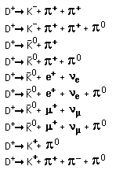

#2 Calculate strong force coupling constant at 1 TeV
The coupling constant is given by alpha=12*pi/((33-2*nf)*ln(E^2/lambda^2))
where nf = number of quark flavors = 6 and lambda is taken as 0.2 GeV
The value of the coupling constant at different energies is then
| E | E(MeV) | alpha(strong) |
| 1MeV | 1 | -0.169411879 |
| 100 | -1.294960041 | |
| 1GeV | 1000 | 0.557708933 |
| 100000 | 0.144433549 | |
| 1TeV | 1000000 | 0.105386585 |
#9 Decays of the top quark
The expected decays will produce a bottom quark and a W+, so you look
as what a W+ will produce
The possibilities include positron and electron neutrino, muon+ and
muon neutrino, tau+ and tau neutrino
It can also decay into quarks like and up and an antidown, a charm
and an antistrange, so mesons can be produced.
One of the channels above produces a prompt muon, but the decay of
the bottom quark is likely to produce
muons from all of the decay schemes.
#13 The gamma plus proton are of extremely high energy, and can
therefore produce heavier particles.
gamma + p -> n + Dzero antiparticle + Dplus, antiDzero->Kplus + piminus,
Dplus->Kminus + piplus + piplus
gamma + P->antiDzero + lambdaplus(charmed); antiDzero->Kplus
+ piminus,lambdacplus->p + Kminus + piplus
#14 Ten decays of the D+ meson.
You expect those products with K's in them to be preferred since it
is the next step down in charged mesons
Some possibilities are shown.

#17 The lifetime is given by the expression tau= hbar/gamma
To calculate, use tau = hbar*c/(lambda*c)=0.197 GeV fm/(lambda*c)
Half width lambda using base as about 5 in figure 18-23 gives lambda
= 2 GeV
Using zero as the base gives half width of about 2.2 GeV
tau
lambda=2 gives lifetime 3.28E-25
lambda=2.2 gives lifetime 2.98E-25